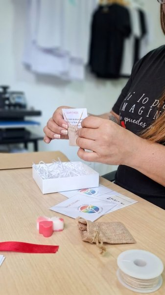

Rosa
Vela artesanal
Vela artesanal de 79grs. en forma de Rosa, Elaborada con Cera de Soja en blanco, rosa claro, rosa oscuro. Aroma Coco, Lavanda, Jazmin.
Hecho a mano · Con amor
Velas artesanales, pulseras, collares y detalles únicos. Cada pieza es hecha a mano — elige la tuya y la pedimos directo por WhatsApp.
Nuestra colección
Vela artesanal
Vela artesanal de 79grs. en forma de Rosa, Elaborada con Cera de Soja en blanco, rosa claro, rosa oscuro. Aroma Coco, Lavanda, Jazmin.
Vela artesanal
Vela artesanal de 1grs. en forma de Mini corazón, Elaborada con Cera de Soja en blanco, rosa, rojo. Aroma Coco, Jazmin
Vela artesanal
Vela artesanal de 23grs. en forma de Rosa pequeña presentada en palito decorativo. Elaborada con cera de soja en blanco, rosa, amarillo rosa claro. Aroma: Coco Vainilla
Vela artesanal
Wax Melts 6grs. en forma de Mini Margarita. Elaborada con cera de soja en blanco, rosa, amarillo rosa claro. Aroma: Coco Vainilla, Canela
Vela artesanal
Vela artesanal de 16grs. en forma de Margarita pequeña presentada en palito decorativo. Elaborada con cera de soja en blanco, rosa, amarillo rosa claro. Aroma: Coco Vainilla
Vela artesanal
Vela artesanal de 33grs. en forma deTulipan pequeña presentada en palito decorativo. Elaborada con cera de soja en blanco, rosa, amarillo rosa claro. Aroma: Coco Vainilla, Jazmin
Vela artesanal
Vela artesanal de 83grs. en forma de Buquet Tulipan. Elaborada con cera de soja en blanco, rojo, amarillo, rosa claro. Aroma: Lavanda, Café
Vela artesanal
Vela artesanal de 104grs. en forma de Espiral. Elaborada con cera de soja en blanco, verde, amarillo, azul. Aroma: Lavanda, Jazmin.
Vela artesanal
Vela artesanal de 75grs. en forma de Sagrada Familia. Elaborada con cera de soja en blanco, verde, amarillo, azul, rosa, beige, rojo Aroma: Lavanda, Jazmin. Coco Vainilla
Vela artesanal
Vela artesanal de 20grs. en forma de Buda. Elaborada con cera de soja en blanco, verde, amarillo, azul, rosa, Beige Aroma: Lavanda. Coco Vainilla.
Vela artesanal
Vela artesanal de 75grs. en forma de Mano Hamsa. Elaborada con cera de soja en blanco, verde, rosa, beige Aroma: Coco Vainilla. Canela
Vela artesanal
Vela artesanal de 182grs. en forma de Corazón. Elaborada con cera de soja en blanco, rosa, rojo Aroma: Coco Vainilla. Lavanda, Limon Fresh.
Vela artesanal
Vela artesanal de 52grs. en forma de Cruz con palomita. Elaborada con cera de soja en blanco con rosa, amarillo, azul Aroma: Coco Vainilla. Jazmin
Vela artesanal
Vela artesanal de 40grs. en forma de Cubo. Elaborada con cera de soja en blanco, amarillo, azul, rosa Aroma: Coco Vainilla. Canela
Vela artesanal
Vela artesanal de 42grs. en forma de Virgen del Carmen. Elaborada con cera de soja en blanco y dorado Aroma: Coco Vainilla. Canela
Vela artesanal
Vela artesanal de 123grs. Elaborado en envase de vidrio transparente, con tapa metalica dorada. Contiene una base de cera de soja blanca. Aroma: Coco Vainilla
Vela artesanal
Vela artesanal de 98grs. Elaborada en envase de metal decorativo. Contiene cera blanca. Aroma: limón Fresh
Vela artesanal
Vela artesanal de 165grs. Elaborado en envase de vidrio transparente, con tapa de corcho. Contiene una base de cera de soja en tonalidades blanco y rosado. Decorado con mecatillo y detalles florales en tono crema. Aroma: Jazmin
Vela artesanal
Vela artesanal de 171grs. Elaborado en envase de vidrio transparente, con tapa metalica dorada. Contiene una base de cera de soja blanca decorada con corazones rojos en superficie. Aroma: Limón Fresh
Vela artesanal
Vela artesanal de 285grs. Elaborado en envase de vidrio transparente, en forma de estrella. Contiene una base de cera de soja blanca y roja. Aroma: Coco, Café, Jasmin
Vela artesanal
Vela artesanal de 342grs. Elaborado en envase de vidrio transparente con tapa de madera. Contiene una base de cera de soja blanca, con rosa pequeña en superficie. Aroma: Jazmin
Vela artesanal
Vela artesanal de 335grs. Elaborado en envase de vidrio transparente con tapa de madera. Contiene una base de cera de soja blanca, con tulipan pequeña en superficie. Aroma: Coco Vainilla
Vela artesanal
Vela artesanal de 418grs. Elaborado en envase de vidrio transparente con tapa de madera. Contiene una base de cera de soja marmoleada con blanco y rosa con corazones rojos en superficie. Aroma: Coco Vainilla
Vela artesanal
Vela artesanal de 508grs. Elaborado en envase de vidrio opaco con tapa de MDF. Contiene una base de cera de soja color canela y mecha de madera. Aroma: Canela
Vela artesanal
Vela artesanal de 516grs. Elaborado en envase de vidrio opaco con tapa de MDF. Contiene una base de cera de soja blanca. Aroma: Coco
Collar artesanal
Gargantilla de Gold-Filled bañada en oro. Cuenta con broche estilo langosta. Dije de piedra natural a tu elección y un mini dije complementario. Mide 25cm de largo y tiene un grosor de 1,5mm
Collar artesanal
Gargantilla de Gold-Filled bañada en oro. Cuenta con broche estilo ancla para un cierre seguro y estetico. Dije de piedra natural a tu elección y un mini dije complementario. Mide 25cm de largo y tiene un grosor de 3mm
Collar artesanal
Collar Medio de Gold-Filled bañada en oro. Cuenta con broche estilo ancla para un cierre seguro y estetico. Dije de piedra natural a tu elección y un mini dije complementario. Mide 29cm de largo y tiene un grosor de 3mm
Collar artesanal
Collar Medio de Gold-Filled bañada en oro. Cuenta con broche estilo ancla para un cierre seguro y estetico. Dije de piedra natural a tu elección y un mini dije complementario. Mide 34cm de largo y tiene un grosor sólido de 4mm
Collar artesanal
Collar Largo de Gold-Filled bañada en oro. Cuenta con broche estilo ancla para un cierre seguro y estetico. Dije de piedra natural a tu elección y un mini dije complementario. Mide 40cm de largo y tiene un grosor sólido de 4mm
Pulsera artesanal
Pulsera Infinito simboliza conexión y propósito. Acompaña tu energía. Trenzado en hilo chino fino. Un amuleto para recordar que todo lo que mereces, permanece.
Pulsera artesanal
Pulsera Infinito simboliza conexión y propósito. Acompaña tu energía. Trenzado en hilo chino fino. Un amuleto para recordar que todo lo que mereces, permanece.
Pulsera artesanal
Pulsera Infinito simboliza conexión y propósito. Acompaña tu energía. Trenzado en hilo chino fino. Un amuleto para recordar que todo lo que mereces, permanece.
Pulsera artesanal
Pulsera San Benito conecta intención y protección. Trenzado en hilo rojo y un dije que acompaña tú energia.
Pulsera artesanal
Pulsera Perla irradia calma y claridad. Trenzado sutil y un centro que refleja luz y quilibrio.
Pulsera artesanal
Pulsera Ojito protege y equilibra tu energia. Trenzado en hilo rojo, y un ojo que acompaña tu camino.
Accesorio artesanal
Dijes Piedras Naturales. Cada una vibra con intención, protección, claridad, fuerza o calma.
Franela artesanal
Franela que une intención y estilo. El Loto renace, el Om eleva. Tela suave y resistente para acompañar tus días con calma y proposito.
Franela artesanal
Franela que une intención y estilo. El Loto renace, el Om eleva. Tela suave y resistente para acompañar tus días con calma y proposito.
Franela artesanal
Franela que une intención y estilo. El Loto renace, el Om eleva. Tela suave y resistente para acompañar tus días con calma y proposito.
Franela artesanal
Franela para mujeres que eligen calma sobre exigencia. Tela suave y diseño minimalista que acompaña tu bienestar. La felicidad es un plan que se viste.
Franela artesanal
Franela que honra tu intuición. Tela suave y diseño minimalista para acompañar tu energia.
Franela artesanal
Franela que afirma tu valor. Diseño limpio, tela suave y diseño minimalista que eleva tu energia.
Franela artesanal
Franela que honra el poder del amor. Tela suave, diseño minimalista y un mensaje que ilumina tu energia. El amor da sentido y se siente.
No encontramos productos con ese criterio.
Así de fácil
Sin pasarelas ni registros: eliges, nos escribes y lo coordinamos contigo.
Explora el catálogo y agrega al carrito todo lo que te guste.
Tu pedido llega armado en un mensaje. Confirmamos disponibilidad y precios.
Elige recoger o recibir en tu puerta. Pagas por transferencia o al recibir.
¿Haces pedidos al mayoreo o quieres velas personalizadas? Escríbenos y te pasamos cotización.
Nuestra historia
Yo_Soy222 nace en Caracas como un espacio de intención. Primero fueron palabras, luz y rituales; luego esa energía tomó forma en velas, franelas y accesorios creados a mano. Cada vela es un mantra. Cada franela, un abrazo suave. Cada accesorio, un símbolo que acompaña.
No son productos. Son rituales cotidianos que iluminan, protegen y recuerdan propósito. Yo_Soy222 es luz hecha objeto. Una marca para quienes desean vivir con calma, intención y significado.

Tu carrito está vacío
Ver catálogo